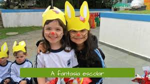

Importâcia
A Páscoa é, para muitos cristãos, a festa de maior importância do calendário religioso, uma vez que ressalta um acontecimento de grande importância dentro da fé cristã: a ressurreição — entendida no cristianismo como uma demonstração da divindade de Jesus.
Semana Santa
O calendário litúrgico praticado pelos católicos acompanha a aproximação da Páscoa com muita devoção. A preparação dela é realizada no decorrer da quaresma — período de 40 dias que antecede essa celebração e quando os fiéis realizam alguma penitência (o tipo de penitência é escolhida por cada pessoa).
Tradições
Como mencionado, a Páscoa é uma das celebrações mais importantes do calendário religioso dos cristãos, e, portanto, tradições são realizadas nesse período. Neste texto já mencionamos a crucificação e ressurreição de Cristo, conhecidas como Paixão de Cristo.
No Sábado de Aleluia, em determinados locais, é realizado um ritual conhecido como Malhação de Judas, no qual um boneco com proporções humanas é espancado e queimado como uma espécie de punição a Judas por ter traído Jesus. Durante a Páscoa, é tradição que as missas ou cultos sejam voltados para a celebração desses acontecimentos e grandes ceias (Eucaristia, para os católicos) são realizadas.
No interior do estado de Goiás, um ritual de Páscoa é realizado há quase três séculos: a Procissão do Fogaréu. Essa procissão foi introduzida na cidade, em meados do século XVIII, por um padre espanhol e encena a perseguição e prisão de Jesus Cristo. A festa é um dos grandes patrimônios da cultura daquele estado e reúne milhares de pessoas todos os anos.